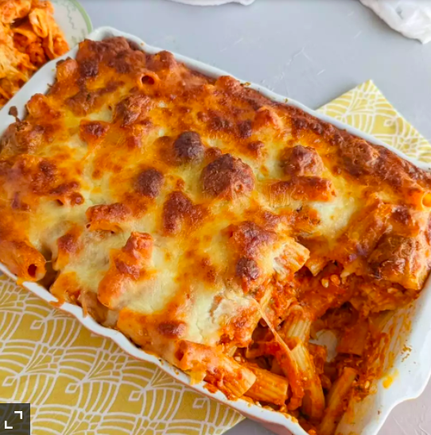

Meatball Pasta Bake

Make a comforting meatball pasta bake to feed the family. Inspired by Italian flavours and made with wholewheat pasta, it's a fabulous, filling meal
Ingredients
- 1 large onion , ½ grated, ½ finely chopped
- 3 garlic cloves , crushed
- 400g beef mince
- 50g fresh breadcrumbs
- 3 tbsp milk
- 25g parmesan, finely grated
- ½ small bunch of parsley, finely chopped
- 3 tbsp olive oil
- 2 x 400g cans chopped tomatoes
- 350g dried pasta
- 2 x 125g balls mozzarella, drained and cut into cubes
Steps
- Mix the grated onion, 1 crushed garlic clove, mince, breadcrumbs, milk, parmesan and parsley in a large bowl. Season well with salt and pepper. Mash the mixture together with your hands until combined. Mould the mix into small balls (about walnut-sized) with damp hands. There will be about 20 meatballs.
- Heat 2 tbsp olive oil in a deep frying pan and fry the meatballs for 6-8 mins until golden brown all over. Fry in batches if you need to - they don't need to be cooked through, just browned on the outside. Set aside on a plate.
- Heat the remaining 1 tbsp olive oil in the pan and fry the chopped onion for 5 mins until softened. Add the remaining garlic, fry for another minute, then add the chopped tomatoes and simmer for 10 mins until thickened and the tomatoes have broken down. Season well with salt and pepper.
- Meanwhile, cook the pasta for 5 mins less than the pack instructions state, in boiling salted water. Heat the oven to 200C/180C fan/gas 6.
- Stir the meatballs into the tomato sauce, adding a splash of water if too thick, and bring to a simmer. Drain the pasta and tip into an ovenproof dish. Pour over the sauce and meatballs and mix well. Stir in most of the mozzarella, then scatter the remaining over the top. Bake for 15-20 mins until the cheese is golden and bubbling, and the top is slightly crisp.